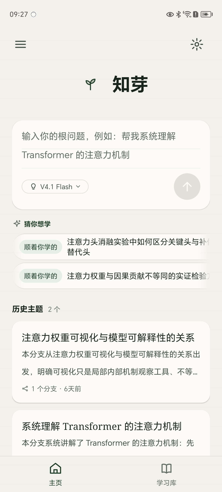
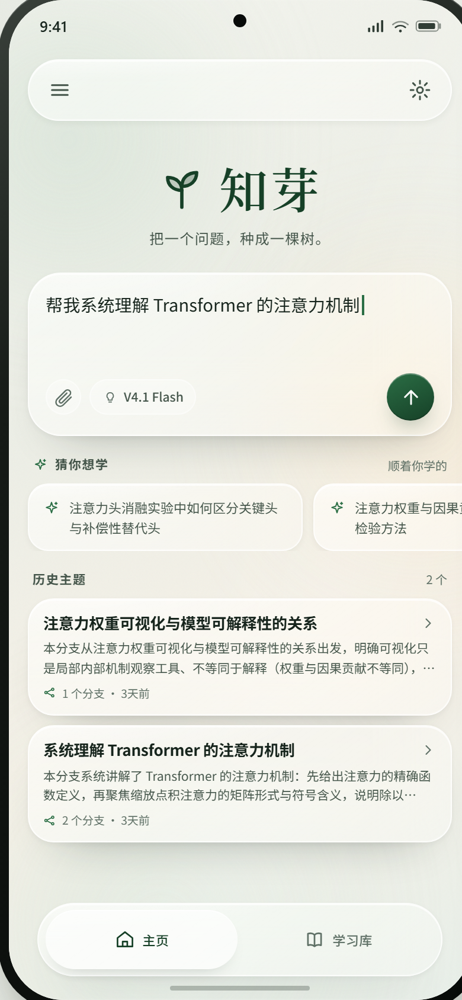
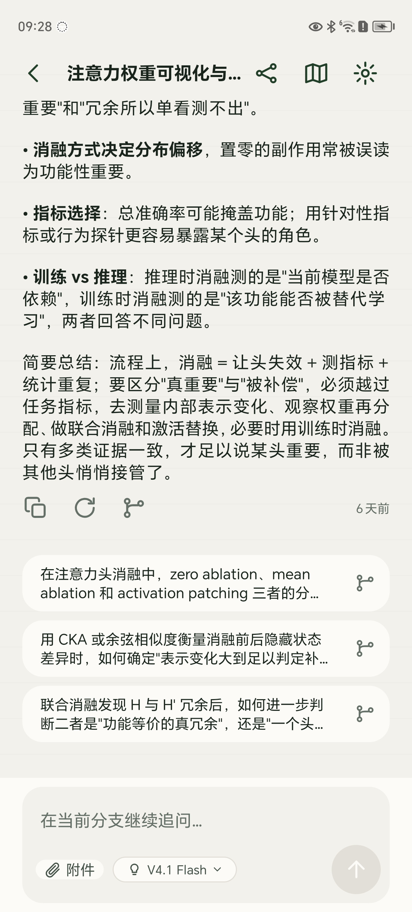
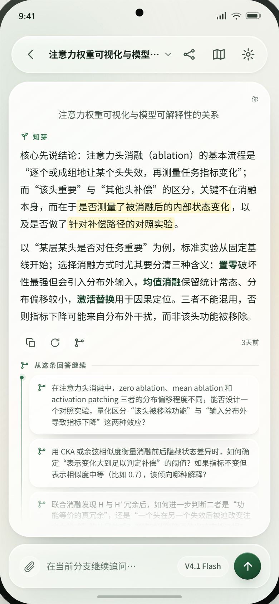
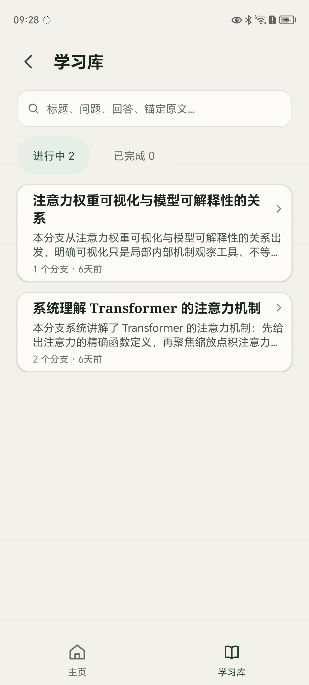
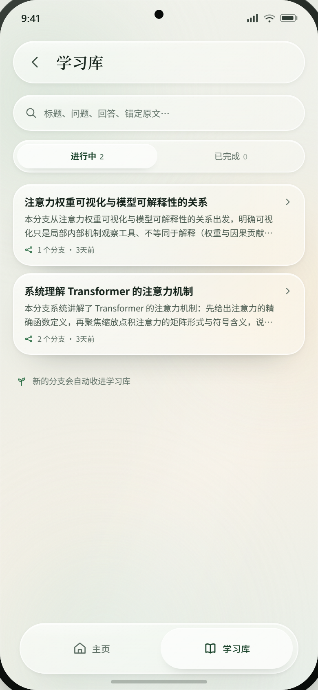

TREELEARN · DESIGN AUDIT · 2026-10-22
当前 APK 已经拿到了晨雾玻璃的材质，但沿用的仍是旧的原生结构：顶栏、首页输入区、推荐、历史卡、底部 tab、对话输入区都还没有按方案 A 重排。下面先回答“是否共用 H5”，再逐屏拆差距，最后给出莫兰迪三步与 Harness 执行顺序。
这是这次“为什么 APK 没跟着变”的根因，也决定了对齐必须原生重画。
Web 是 React + TypeScript；Android 是 Java + 原生 View/XML。两边共享设计 token 的生成链、文案与夹具、1:1 判据；不共享 UI 组件、布局或 CSS。Web 的 glass.css 不会进入 APK，Android 也不会加载 H5 页面来跑主界面。
箭头只传“数值与事实”，不传布局。要让实机像 A，必须在 Android 原生层把结构、图标、间距和状态一起重做。
049 做的是“表面材质覆盖”，不是“方案 A 结构复刻”。
当前顶栏是裸 icon 行，A 是悬浮玻璃胶囊；当前首页输入区只有模型胶囊和浅色发送，A 还有附件圆钮与深绿发送；当前 tab 是整宽底栏，A 是悬浮胶囊。
推荐是 marquee 长条，A 是两张玻璃卡；历史卡缺右箭头；学习库 segment 是两个独立胶囊，A 是一个玻璃容器；对话分支还没有 A 的“从这条回答继续”竖线栈。
A 的品牌与正文标题是中文衬线；当前实机的 serif 回退成了黑体。系统状态栏与手势条也不能照抄 mock 的 9:41 和黑色 home indicator。
左侧为当前 APK 真机截图（1200×2652），右侧为方案 A 提案手机屏（390×844 @2x）。






莫兰迪不是把绿色换掉，而是把环境色温调软、把分类色收进小面积。以下可单独开关。
A 的底色是绿 + 沙的晨雾。参考图的“灰粉 / 灰紫 / 沙杏 / 鼠尾草”可以借，但只借在环境光和很小的分类面；正文、按钮、焦点仍用品牌绿与近黑绿。这样既有莫兰迪的安静，又不会掉进“整页灰米底 + 彩色卡片墙”。
先看环境光，再看分类色，最后看形体。
本分支从可视化只是局部观察工具出发，讨论权重与因果贡献为什么不等同。
演示只表达三步的方向与比例，不是最终像素；生产值以 token 链落盘后为准。
先结构后材质；每一片都能独立回滚，并且都以真机截图 + UIAutomator 读数验收。
以 A-晨雾玻璃.html 为唯一目标；本页 + 三屏截图 + 读数作为基线。不改生产代码。
新增 2 个 glow、4 个 tint、on-tint 文本；原型 → tokens.json → colors.xml + tokens.css；Web glass.css 与 Android PaperRuleBackdrop 同步消费。
悬浮顶栏、hero 副标题、附件/模型/绿发送、两张推荐卡、历史 chevron、悬浮 tabbar。
胶囊顶栏、阅读面结构、动作行、分支竖线栈、dock 输入区；分支数据接入 ChatScreen。
胶囊顶栏、玻璃搜索、segment 容器与计数、卡片材质、底部提示；分支导航复用同一套顶栏与卡片。
Web 只叠莫兰迪环境光/分类 tint/圆角字阶，不改 A 的结构；对话列宽已修，保持。
这些会改变成本或“1:1”的定义，不适合由我替你决定。
如果“都一致”包含色温，那就以 A 原样为准，ROI 三步只作为可选层；如果接受环境光与分类 tint 的微调，则默认叠加上去。
当前实机的 serif 已回退成黑体，和 A 的品牌/标题不一致。要 1:1 需要内置一份 OFL 衬线（会增大 APK）；否则只能接受系统回退。
首页附件、对话标题下拉、分支竖线栈都需要真实行为。现有流程接不上时，我倾向“先不画”，而不是放一个点了没反应的按钮。
A 的 9:41 状态栏和黑色 home indicator 是展示用；实机应使用真实系统栏，并通过 insets 让胶囊顶栏与手势条保持安全距离。